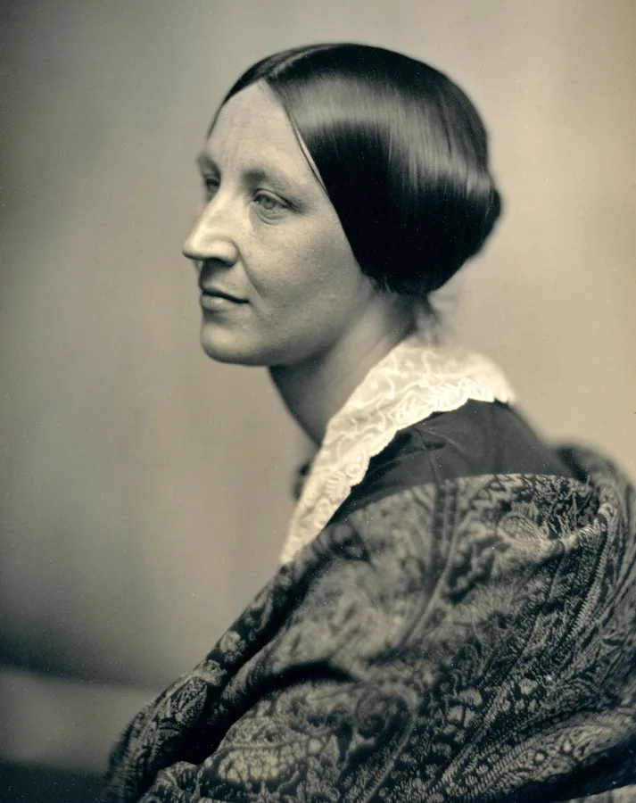
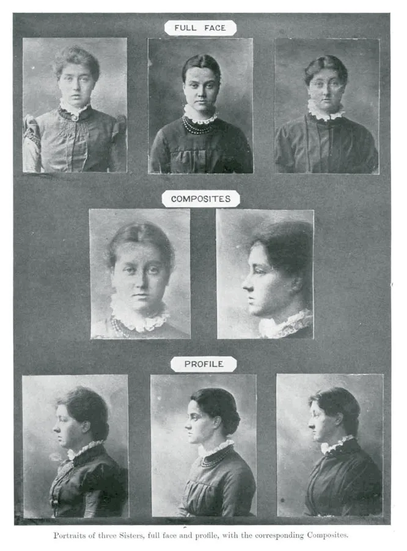
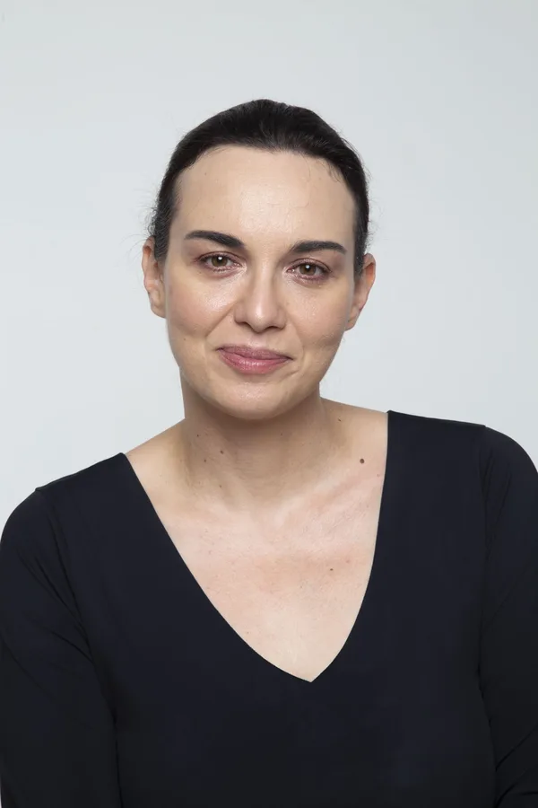

Nessun essere umano nella storia è stato così tanto fotografato e costretto a vedersi, allo specchio, nei selfie, nei quadratini delle videocall, come accade a noi. «Ma io sono davvero questo insieme di elementi che vedo impressi in una foto?», ci chiediamo sempre prima e sempre più spesso. Questa frattura tra il nostro corpo e la sua rappresentazione è la condizione strutturale dell’esperienza moderna della bellezza.
Dall’invenzione della fotografia, che ha fissato i volti su una pellicola e li ha resi confrontabili, fino a oggi, l’immagine è diventata via via più vera del corpo, e ci ha fatto credere di doverci conformare a un certo ideale per corrispondere a una sua versione ogni volta più perfetta. La bellezza si è trasformata in un dispositivo di potere che ci sorveglia, ci misura, ci giudica secondo criteri che non abbiamo scelto, e questa sorveglianza si è installata in noi, come uno specchio che ci portiamo dentro. E più ci guardiamo, più siamo spinti a lavorare instancabilmente sulla nostra immagine, a concepire la bellezza come una proprietà da costruire giorno dopo giorno perché duri in eterno, a investire sul corpo come un progetto che non finisce mai.
Maura Gancitano racconta, anche attraverso un ricchissimo apparato iconografico, la storia del rapporto tra corpo e immagine dagli inizi dell’Ottocento a oggi, per comprendere il modo in cui la fotografia, la pubblicità, la moda, il cinema, la statistica, i social, i media digitali e in ultimo l’intelligenza artificiale ci abbiano cambiati, inventando corpi sempre più perfetti e sempre meno reali. Ma se è vero che non possiamo più vederci e vedere senza i filtri, possiamo però imparare a riconoscerli e a muoverci al loro interno, per liberarci dal mito della bellezza perfetta: cercando nuovi modi di apparire e di esistere in relazione con gli altri, abitando il corpo che abbiamo, sentendolo dall’interno, qui e ora, con tutto ciò che porta scritto su di sé.
Quattro anni dopo Specchio delle mie brame (Einaudi 2022, Premio Rapallo), Maura Gancitano torna sulla bellezza e ne ricostruisce la fabbrica: due secoli di immagini che hanno insegnato ai corpi come apparire.
Due secoli di sguardi
Il libro parte dagli inizi dell’Ottocento, quando un volto per la prima volta può essere fissato su una lastra e messo accanto a un altro, e arriva ai filtri e ai modelli generativi di oggi. In mezzo stanno la pubblicità, la moda, il cinema, la statistica, i social: ognuno ha aggiunto un pezzo alla macchina che produce il corpo perfetto.

Un dagherrotipo dello studio Southworth & Hawes, Boston, 1850 circa. La prima generazione di persone che ha potuto guardare la propria immagine come un oggetto.

Tre sorelle, di fronte e di profilo, e al centro il loro ritratto composito: Francis Galton sovrapponeva più volti su una stessa lastra per ottenere una faccia media. La statistica entra nella bellezza.
Centosessantanove immagini per vedere come siamo stati guardati.
Le tappe
Novembre 2026
Le presentazioni con Maura Gancitano: dove, a che ora, con chi
Un party letterario alla Libreria Teatro Tlon, a Ostiense, nei giorni di Più Libri Più Liberi (4–8 dicembre). La data arriva qui appena è fissata.
Per informazioni sulle singole presentazioni: eventi@tlon.it
L’autrice

Maura Gancitano è filosofa, pedagogista e scrittrice. Nel 2015 ha fondato Tlon insieme ad Andrea Colamedici. È direttrice filosofica del Festival del Pensare Contemporaneo, insegna allo IED di Roma ed è editorialista di Vanity Fair.
I suoi libri sono tradotti in nove lingue. Con Specchio delle mie brame. La prigione della bellezza (Einaudi 2022) ha vinto il Premio Rapallo. Tra i più recenti: Erotica dei sentimenti (Einaudi 2024), Animali narrativi (Marsilio 2026) e, insieme ad Andrea Colamedici, Botanica della meraviglia (HarperCollins 2025).